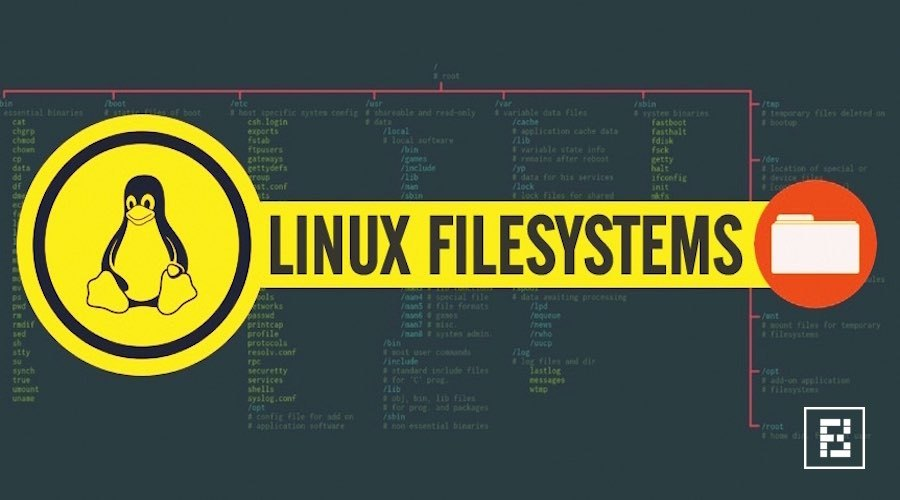
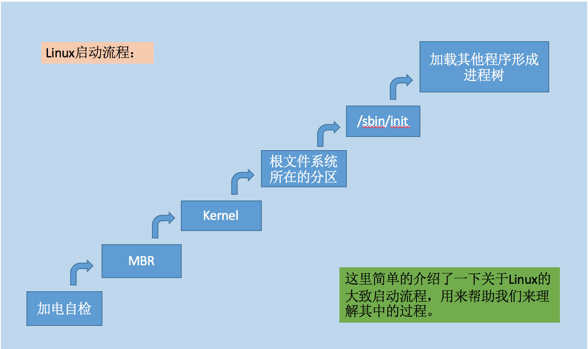
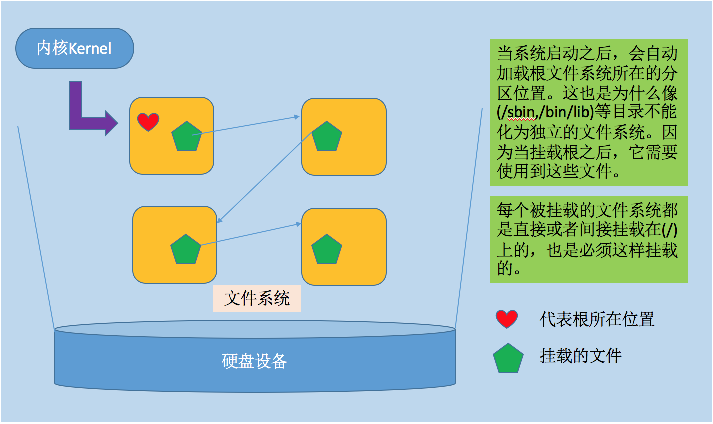
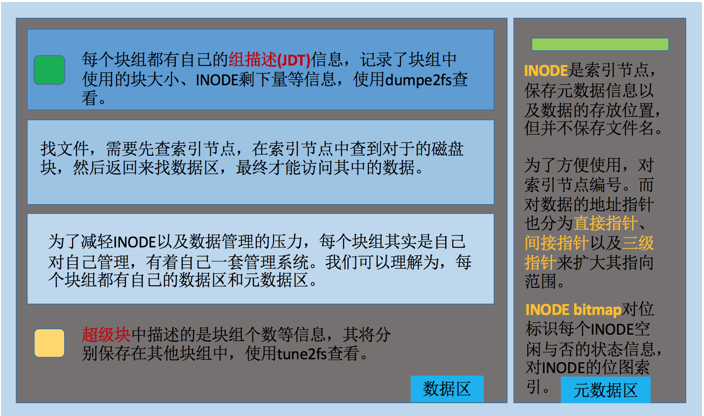
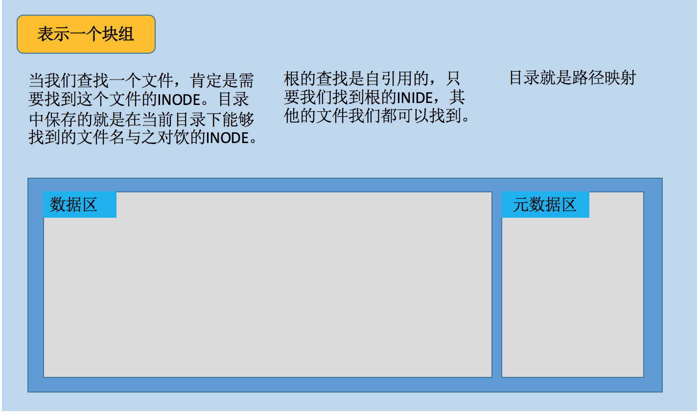
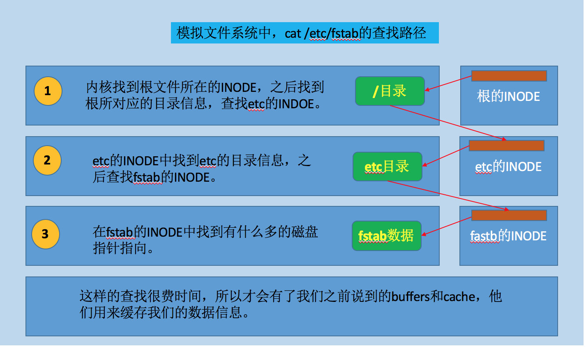

在 Linux 系统中，一切都是文件，理解文件系统非常有必要。
将额外文件系统与根文件系统某现存的目录建立起关联关系，进而使得此目录做为其它文件访问入口的行为称之为挂载。解除此关联关系的过程称之为卸载。
- 被挂载的设备必须指明其挂载点(
Mount Point)。 - 卸载时，可使用设备，也可以使用挂载点。
- 挂载点下原有文件在挂载完成后会被临时隐藏，直到设备被卸载之后才会出现。

1. 文件系统图解
我们这里以 ext 文件系统为例，方便我们的理解。对于像 btrfs 或者 xfs 的文件系统，我们这里不考虑。





链接文件
- 硬链接
- 不能够对目录进行
- 不能跨分区进行
- 指向同一个
inode的多个不同路径，创建文件的硬链接即为为inode创建新的引用路径，因此会增加其引用计数。
- 软链接
- 可以对目录进行
- 可以跨分区
- 指向的是另一个文件的路径，其大小为指向的路径字符串的长度，不增加或减少目标文件
inode的引用计数。
- 使用格式
ln [-sv] SRC DEST-s：symbolic link-v: verbose
文件管理操作对文件的影响
- 文件删除
- 就是把
inode的引用计数减一，如果引用计数为0的时候，系统会认为这个文件已经被删除了。其对应的位图会将其对应的数据块置为0，不会删除，所以我们使用磁盘恢复工具才能恢复出来信息。 - 现在有一些清除数据的工具，用全
0的信息将删除的数据进行抹去，很难恢复出原始信息。一般重复抹去15次以上就不可以恢复了，为什么需要这么多次呢？这跟数据的存储格式有关。
- 就是把
- 文件复制
- 创建一个新的空文件，把原来的这个文件的数据放到这个空文件中，所以速度比较慢。
- 文件移动
- 跨分区移动，基本和文件复制一样。
- 同分区移动，就是添加一个路径文件，指向这个
INODE号即可。
2. mount 命令
格式：
mount [-afFhnrvVw] [-L<标签>] [-o<选项>] [-t<文件系统类型>] [设备名] [加载点]
使用须知：
- 单独使用
mount命令，将显示所以被挂载的信息，但是多数是虚拟文件系统。
device：指明要挂载的设备
- (1) 设备文件：例如/dev/sda5
- (2) 卷标：-L ‘LABEL’, 例如 -L ‘MYDATA’
- (3) UUID, -U ‘UUID’：例如 -U ‘0c50523c-43f1-45e7-85c0-a126711d406e’
- (4) 伪文件系统名称：proc, sysfs, devtmpfs, configfs
dir：挂载点
- (1) 事先存在；建议使用空目录
- (2) 进程正在使用中的设备无法被卸载，比如你使用
cd命令到挂载的文件系统中。
参数选项：
-a- 加载文件
/etc/fstab中设置的所有设备
- 加载文件
-f- 不实际加载设备
- 可与
-v等参数同时使用以查看mount的执行过程
-F- 需与
-a参数同时使用 - 所有在
/etc/fstab中设置的设备会被同时加载，可加快执行速度
- 需与
-h- 显示在线帮助信息
-L<标签>- 加载文件系统标签为<标签>的设备
-l- 显示已加载的文件系统列表，同直接执行
mount
- 显示已加载的文件系统列表，同直接执行
-n- 不将加载信息记录在
/etc/mtab文件中
- 不将加载信息记录在
-U 'UUID'- 以
UUID指定要挂载的设备
- 以
-B,--bind- 绑定目录到另一个目录上
-o<选项>- 指定加载文件系统时的选项。有些选项也可在
/etc/fstab中使用。这些选项包括： async- 以非同步的方式执行文件系统的输入输出动作
atime- 每次存取都更新
inode的存取时间，默认设置，取消选项为noatime
- 每次存取都更新
auto- 必须在
/etc/fstab文件中指定此选项 - 执行
-a参数时，会加载设置为auto的设备，取消选取为noauto
- 必须在
defaults- 使用默认的选项
- 默认选项为
rw、suid、dev、exec、anto nouser与async
dev- 可读文件系统上的字符或块设备，取消选项为
nodev
- 可读文件系统上的字符或块设备，取消选项为
exec- 可执行二进制文件，取消选项为
noexec
- 可执行二进制文件，取消选项为
noatime- 每次存取时不更新
inode的存取时间
- 每次存取时不更新
noauto- 无法使用
-a参数来加载
- 无法使用
nodev- 不读文件系统上的字符或块设备
noexec- 无法执行二进制文件
nosuid- 关闭
set-user-identifier(设置用户 ID)与set-group-identifer(设置组 ID)设置位
- 关闭
nouser- 使一位用户无法执行加载操作，默认设置
remount- 重新加载设备。通常用于改变设备的设置状态
ro- 以只读模式加载
rw- 以可读写模式加载
suid- 启动
set-user-identifier(设置用户 ID)与set-group-identifer(设置组 ID)设置位，取消选项为nosuid
- 启动
sync- 以同步方式执行文件系统的输入输出动作
user- 可以让一般用户加载设备
acl- 启用此文件系统上的
acl功能
- 启用此文件系统上的
-r- 以只读方式加载设备。
- 指定加载文件系统时的选项。有些选项也可在
-t<文件系统类型>- 指定设备的文件系统类型，也可以不指定。如果不知道的话，系统根据
blkid来查看。常用的选项说明有： minixLinux最早使用的文件系统
ext2Linux目前的常用文件系统
msdosMS-DOS的FAT
vfatWin85/98的VFAT
nfs- 网络文件系统
iso9660CD-ROM光盘的标准文件系统
ntfsWindows NT的文件系统。
hpfsOS/2文件系统，Windows NT 3.51之前版本的文件系统
auto- 自动检测文件系统
ubifs- 无序区块镜像文件系统是用于固态存储设备上，为
JFFS2的后继文件系统之一。
- 无序区块镜像文件系统是用于固态存储设备上，为
- 指定设备的文件系统类型，也可以不指定。如果不知道的话，系统根据
-v- 执行时显示详细的信息
-V- 显示版本信息
-w- 以可读写模式加载设备，默认设置
Note：
- 上述选项可多个同时使用，彼此使用逗号分隔
- 查看内核追踪到的已挂载的所有设备
cat /proc/mounts - 可将经常使用的设备写入文件
/etc/fstab，以使系统在每次启动时自动加载 mount加载设备的信息记录在/etc/mtab文件中，使用umount命令卸载设备时，记录将被清除
实战演示：
# 列出所挂载的系统
[root@linux ~]# mount -l
# 挂载u盘
[root@linux ~]# mount /dev/sda1 /media/usb
# 将已挂载的设备移到其他目录
[root@linux ~]# mount --bind /media/usb /mnt
# 将ISO文件
[root@linux ~]# mount -o loop ./abc.iso /mnt/cdrom
# 挂载windows盘
[root@linux ~]# mount -t ntfs-3g /dev/sda1 /mnt/windows
# 访问windows共享文件
[root@linux ~]# mount -o username=escape,password=escaoe -l //192.168.6.2/soft /mnt3. umount 命令
格式：
umount [-ahnrvV][-t <文件系统类型>][文件系统]
卸载命令：
umount DEVICEumount MOUNT_POINT
参数选项：
-a- 卸除/etc/mtab 中记录的所有文件系统
-h- 显示帮助
-n- 卸除时不要将信息存入/etc/mtab 文件中
-r- 若无法成功卸除，则尝试以只读的方式重新挂入文件系统
-t<文件系统类型>- 仅卸除选项中所指定的文件系统
-v- 执行时显示详细的信息
-V- 显示版本信息
4. fuser 命令
当我们想要卸载一个文件系统的时候，发现我们并未来使用，却无法卸载。有可能是因为当前计算机上其他的用户正在使用这个文件系统，导致我们无法卸载成功。
格式：
fuser [-fuv] [-a|-s] [-4|-6] [-c|-m|-n space] [ -k [-i] [-M] [-w] [-SIGNAL] ] name ...
参数选项：
-l- 显示信号
-4- IPv4
-6- IPv6
-a- 与程序相关的所有文件
-k- 删除程序相关的所有文件
-u- PID 显示用户名
-v- 运行时，显示相信处理信息
-m- 挂载文件系统
-signal- 发送信号
-n- 指定关键字进行搜索,如 文件、UDP、TCP
-V- 显示版本显示
# 查看正在访问指定文件系统的进程
$ fuser -v MOUNT_POINT
# 终止所有在正访问指定的文件系统的进程
$ fuser -km MOUNT_POINT5. swapon 和 swapoff 命令
挂载交换分区
格式
swapon [OPTION]... [DEVICE]
参数选项
-a- 激活所有的交换分区
-p PRIORITY- 设定优先权，在
0-32767中间选一个数字。或在/etc/fstab里面加上pri=[value] ([value/0-32767])，在启动时会挂着他swapon -a来启动他们，而且有优先权设定。 - 设定优先级是因为，如果我们存在多个交换分区，其存放的位置不同，可以导致使用的效率不用。如果，固态的 SSD 磁盘和不同磁盘之间的差别。
- 设定优先权，在
卸载交换分区
格式
swapoff[必要参数][选择参数]
参数选项
-a- 关闭所有交换设备
-h- 帮助信息
设定交换分区
# 创建大小为512M的交换文件
[root@linux ~]# dd if=/dev/zero of=/swapfile1 bs=1024 count=524288
# 使用mkswap命令来设置交换文件
[root@linux ~]# mkswap /swapfile1
# 启用交换分区
[root@linux ~]# swapon /swapfile16. free 命令
显示系统使用和空闲的内存情况，包括物理内存、交互区内存(swap)和内核缓冲区内存，不会四舍五入。
格式
free [options]
参数选项
-b- 显示内存的单位为字节
-k- 显示内存的单位为 KB
-m- 显示内存的单位为 M
-o- 忽略缓冲区调节列
-t- 总和信息
-s<时间>- 每隔指定时间执行一次命令，单位为 s
-h- 以可读形式显示容量
显示解读
total中显示的是我们的实际内存大小，而userd则显示的是已经使用的内存大小。used中包含系统使用时的实际使用量，同时包含了为了加速而缓存的buffers和cache。shared表示同享内存空间，不能被清除掉。
[root@localhost ~]# free -m
total used free shared buff/cache available
Mem: 977 591 66 5 320 189
Swap: 2047 3 2044实战演示
# 每3秒执行一次
root@tnak-VirtualBox:/home/tnak# free -s 3
total used free shared buffers cached
Mem: 508176 353360 154816 0 63580 231656
-/+ buffers/cache: 58124 450052
Swap: 521212 0 521212

7. df 命令
文件系统空间占用等信息的查看工具
格式
df [OPTION]... [FILE]...
参数选项
-a- 列出包括 BLOCK 为 0 的文件系统
--block-size=SIZE- 指定块的大小
-h- 用常见的格式显示出大小(例如:1K 234M 2G)
-H- 同上,但是这里的 1k 等于 1000 字节而不是 1024 字节
-i- 用信息索引点代替块表示使用状况
-k- 指定块大小等于 1024 字节来显示使用状况
-l- 只显示本地文件系统使用状况
-P- 使用 POSIX 格式输出
- 如果我们的文件名称特别长会导致我们输出的信息不会在一行中显示，如果我们使用
grep等命令的时候，会造成影响。我们使用这个参数，则会在一行中显示信息。
-m- 以指定块大小等于 1048576 字节(1M)来显示使用状况
--no-sync- 在取得使用信息前禁止调用同步 (default)
--sync- 在取得使用信息前调用同步
-t,--type=TYPE- 只显示指定类型(TYPE)的文件系统
-T,--print-type- 输出每个文件系统的类型
--help- 输出该命令的帮助信息并退出
--version- 输出版本信息并退出
实战演示
# 有百分之五到百分之十的误差都是允许的，因为是什么单元换算的问题导致的。
[root@localhost ~]# df
Filesystem 1K-blocks Used Available Use% Mounted on
/dev/mapper/centos-root 18307072 4184804 14122268 23% /
devtmpfs 485336 0 485336 0% /dev
tmpfs 500668 100 500568 1% /dev/shm
tmpfs 500668 7200 493468 2% /run
tmpfs 500668 0 500668 0% /sys/fs/cgroup
/dev/sda1 508588 201884 306704 40% /boot
tmpfs 100136 8 100128 1% /run/user/10008. du 命令
报告目录或者文件磁盘空间使用情况
格式
du [OPTION]... [FILE]...
参数选项
-a- 显示对所有文件的统计，而不只是包含子目录
-b- 输出以字节为单位的大小，替代缺省时 1024 字节的计数单位
--block-size=size- 输出以块为单位的大小，块的大小为 size 字节
-c- 在处理完所有参数后给出所有这些参数的总计。这个选项被 用给出指定的一组文件或目录使用的空间的总和
--exclude=pattern- 在递归时，忽略与指定模式相匹配的文件或子目录。模式可以是任何 Bourne shell 的文件 glob 模式
-h- 为每个数附加一个表示大小单位的字母，象用 M 表示二进制 的兆字节
-H- 与 -h 参数起同样的作用，只是使用法定的 SI 单位( 用 1000 的幂而不是 1024 的幂，这样 M 代表的就是 1000000 而不是 1048576)。(fileutils-4.0 的新选项)
-m- 输出以兆字节的块为计数单位的大小(就是 1,048,576 字节)
--max-depth=n- 只输出命令行参数的小于等于第 n 层的目录的总计。
--max-depth=0的作用同于-s 选项
- 只输出命令行参数的小于等于第 n 层的目录的总计。
-s- 对每个参数只显示总和
-S- 单独报告每一个目录的大小，不包括子目录的大小
9. /etc/fstab 文件解读
文件挂载的配置文件：
/etc/fstab
为什么写在这个文件里面的设备就会被挂载呢？
- 因为当计算机启动的时候，执行系统启动的脚本就会读取这个文件，并且使用
mount命令，分析解读其中的每一行，进行挂载文件系统。
# 文件书写解析
[root@localhost ~]# cat /etc/fstab
# /etc/fstab
# Created by anaconda on Tue Mar 8 23:19:14 2016
# Accessible filesystems, by reference, are maintained under '/dev/disk'
# See man pages fstab(5), findfs(8), mount(8) and/or blkid(8) for more info
/dev/mapper/centos-root / xfs defaults 0 0
UUID=4674a4dd60e2c8e02d /boot xfs defaults 0 0
/dev/mapper/centos-swap swap swap defaults 0 0每一行的六个字段表示的含义
- （1）要挂载的设备或伪文件系统
- 设备文件
LABEL(LABEL=””)UUID(UUID=””)- 伪文件系统名称(proc, sysfs)
- （2）挂载点
swap就挂载在swap中，其实它是用swapon来激活的
- （3）文件系统类型
- （4）挂载选项
defaultsmount中-o的参数
- （5）转储频率
- 其作用不大，已经很少使用了
0：不做备份- 1：每天转储
- 2：每隔一天转储
- （6）自检次序(
- 额外指定的文件系统不建议自动自检，防止误删除，如数据库文件
0：不自检1：首先自检；一般只有 rootfs 才用 1- 其他数字表示优先级(2，3…)